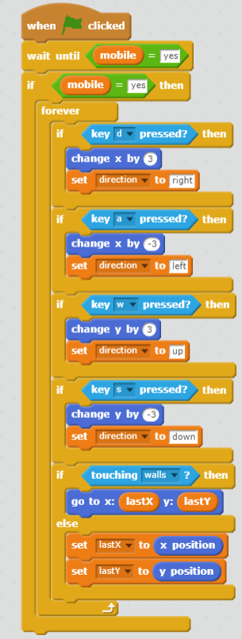
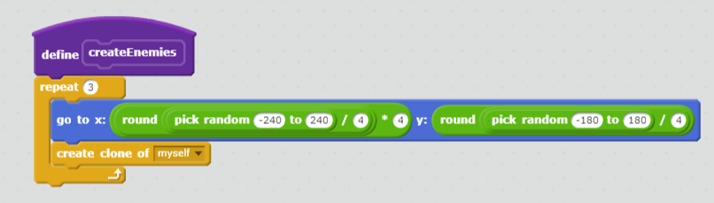

Scratch Game : Spider Escape
The main and only goal of Spider Escape is to evade the spiders and run as far as possible,
the farther ypu run the more points you accumulate, but in the end there is no way to win,
the game goes on for as long as you are capable of doing so.
The Criteria
Scoring System
Whenever you reach the edge of your screen, you move to another portion of the map,
whenever this transition occurs, you gain a point, your score is visible by a counter.
Randomness
Whenver you transition to another portion of the map, four spiders spawn at random places
on the map.
Difficulty Change
If you decide to press on the "hardmode" button, you will accumulate half as many points
Losing
Whenever you touch a spider, you "die", in other words, everything besides the music stops
and a death screen is shown.
Reflection
Why this game idea?
I chose this idea because I was recently playing the "Dark Souls" series, which is famous
for being extremely difficult. There was this one area with a ton of spiders, and instead of
fighting, I ran past, and it was the most difficult part of the game for me. Thus, this game.
Successes
One of the prominent successes that really boosted my self esteem was getting the home
screen to work, another success was actually drawing all of my animations, pixel by pixel.
Obstacles
One of the prominent obstacles that really killed my self esteem was the A.I, and rigging
the animations to work with the movement of my character.
Theoretical Improvements
I would add an attack, shield, and stamina, along with improving the enmy A.I and such.

This script is an algorythm because it's a step by step procedure that includes iterations
conditionals, and mathematical / logical codes. This script is responsible for the movement
of the player character.
